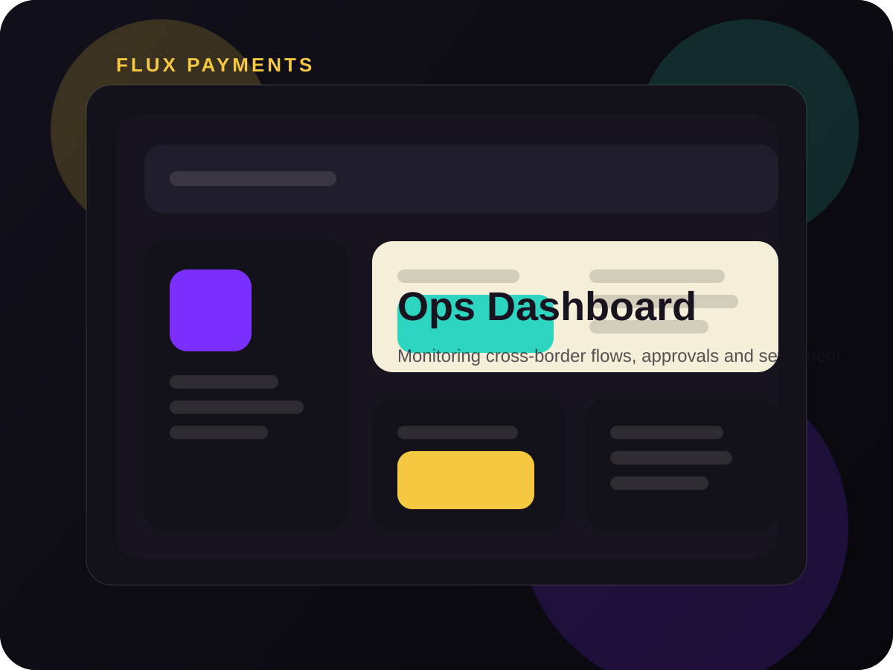

Challenge
Payment operations products can collapse into noisy dashboards. The system needed to communicate urgency without overwhelming the user.
A monitoring and controls interface for cross-border transaction flows, designed to make approvals, exceptions and settlement status easier to act on.

Payment operations products can collapse into noisy dashboards. The system needed to communicate urgency without overwhelming the user.
The resulting concept feels cleaner, faster and more executive-ready while preserving the depth required for a serious fintech product.